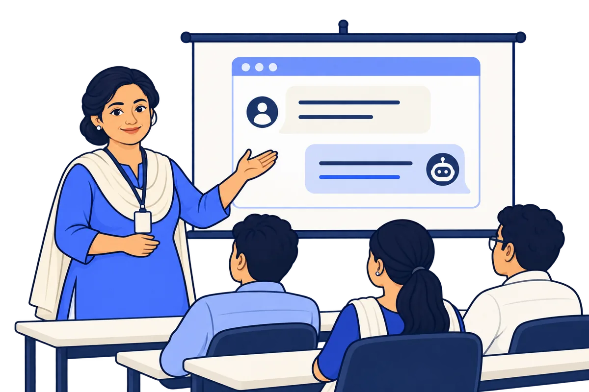

Facilitator Kit · about 5 hours
Facilitator Kit: Framing and Refining
This kit is for you, the facilitator. It has the session plan, the live demo, quick fixes and an answer bank.

Before the session
Get the room ready before learners arrive.
Use the switch at the top to pick your group, ITI or Higher education. It changes the examples only, never what learners must do.
Your task. Tick each line when it is ready.
0 of 6 ready
Session plan · Part 1 of 3
Part 1 runs from the warm-up to the live demo.
It has 4 blocks in the first 80 minutes. A 10-minute break comes next.
Your task. Tap each block to see what you do.
0:00–0:15Welcome and warm-up
Ask: “Does AI look up answers, or guess the next words?”
Then ask each learner for one task this week that took too long. Write 5 on the board, because Lab 2 uses them.
Remind everyone to use made-up names and numbers only.
0:15–0:30VideosVID01, VID02
Watch the videos together. Pause at each checkpoint and take answers from the room.
0:30–0:50ReadingREAD01
Learners work alone or in buddy pairs. If devices are slow, do the Reading screens from “Make a guess” to “See it done” aloud together.
0:50–1:20Live demo
Run 6 turns. Use the demo screens in this kit.
Session plan · Part 2 of 3
Part 2 is the Prompt Card and Lab 1.
It runs from 1:30 to 2:35. A 15-minute break comes next.
Your task. Tap each block to see what you do.
1:30–1:45
Prompt CardCARD01
Learners build one request. Then they turn to the 5 moves.
1:45–2:35Lab 1: rewrite five weak requestsLAB01
Learners work alone. Fast finishers start Lab 2. If there is no internet, use the printed card.
Session plan · Part 3 of 3
Part 3 is practice, pair work and the Section Check.
It runs from 2:50 to the end of the session at 5:00.
Your task. Tap each block to see what you do.
2:50–3:30Lab 2: your own taskLAB02
Learners pick a task from the warm-up list on the board.
3:30–3:55Practice BotBOT01
On a shared device, one learner types. The other reads aloud and checks. They swap halfway.
3:55–4:15
Peer exchangeCOMM01
Learners work in pairs. Repeat the privacy reminder first.
4:15–4:45Section CheckEVAL01
The pass mark is 70%. Tries are unlimited. Note who needs a retry.
4:45–5:00Resources and closeRES01
Ask the exit question: “Which move did you use most today? What did you check?”
Live demo · How to run it
Run every demo turn with the same 4 steps.
Use one chat for all 6 turns.
Your task. Put the 4 steps in the right order.
- Show the answer on screen. Let it load fully.
- Ask the room: “What is wrong with it? Which move fixes it?” Learners show 1 to 5 fingers.
- Give pairs 30 seconds to explain their choice. Then vote again.
- Type the move. Read the new answer aloud.
Live demo · Turn 1 of 6
Turn 1 shows what a weak request gets.
The answer is very general. Learners find out why.
Your task. Say the line, type the request, then ask the room.
Now we see what a weak request gets us.
Write about workshop safety.Write about exam preparation.Who is this for? What exactly should it make? How long should it be?
Do not scroll fast. Let learners see how general the answer is.
Live demo · Turn 2 of 6
Turn 2 narrows an answer that covers too much.
Narrow is move 1. It asks for one part only.
Your task. Say the line, type the move, then ask the room.
That covers too much. I will narrow it.
Only tell me about lathe safety.Only tell me how to prepare for my first-semester maths exam.What was the problem? The answer you want: too much.
The new answer is shorter and about one machine.The new answer is shorter and about one exam.
Live demo · Turn 3 of 6
Turn 3 expands an answer that skipped what you need.
Expand is move 2. It asks for more about one point.
Your task. Say the line, type the move, then ask the room.
It skipped what I need. I will expand it.
Tell me more about what to check before switching on the lathe.Tell me more about how to plan the last 7 days.What was missing?
The new answer has more real, useful detail.
Live demo · Turn 4 of 6
Turn 4 changes the tone for the reader.
Change the tone is move 3. It makes the answer fit the reader.
Your task. Say the line, type the move, then ask the room.
This is too hard for a new trainee. I will change the tone.This is hard to follow. I will change the tone.
Say this simply, for a first-year trainee.Say this simply, as a checklist a first-year student can follow.Who is the reader? Is it easier now?
Show the old and new answers side by side, if your tool keeps them.
Live demo · Turn 5 of 6
Turn 5 checks the answer against a trusted source.
Check it is move 4. This is the most important turn.
Your task. Say the line, type the move, then check it with the room.
Now I will ask what might be wrong. Then we check it ourselves, against our workshop’s safety chart.Now I will ask what might be wrong. Then we check it ourselves, against the official timetable.
Which parts of this might be wrong or made up?Which rules, numbers or dates did nobody give it? Where do we check them?
Open the chart. Compare 2 or 3 rules. Cross out anything not on the chart. Say: “Safety rules come from our workshop, not from AI.”Open the timetable and syllabus. Cross out any date, unit or marks split that is not in them. Say: “Dates come from the official timetable, not from AI.”
Live demo · Turn 6 of 6
Turn 6 combines two good versions into one.
Combine is move 5. Then the room decides if the result is ready to use.

Your task. Say the line, type the move, then ask the room.
I have two good versions in this chat. I will combine them.
Combine the simple version and the pre-start checklist into one notice.Combine the 7-day plan and the checklist into one page.“Would I use this now?”
The answer you want: “Only after checking every rule against our chart.”The answer you want: “Only after checking dates and units against the official timetable.”
When the AI is wrong
A wrong AI answer in class is a teaching moment.
It is not a failure. Follow the same 5 steps every time.
Your task. Put the 5 steps in the right order.
- Stay calm. Say: “Good. This is why we check.”
- Ask the room: “What is wrong? How do we know?”

Check it together against a trusted source, like the chart, textbook or official notice. Do not ask the AI to decide.- Fix it by hand, or ask again with the right fact in the Context.
- Note it in the facilitator channel as a teaching example.
If you cannot check it now, say: “I will check and tell you before the next session.” Never guess on policy.
Quick fixes
Use a quick fix when the session does not go to plan.
Think of your own fix first. Then open the card to check it.
Your task. Tap each problem to see the fix.
Answer bank
Find a short answer to a learner’s question.
Each answer tells you what to say, why, and what to do next.
Your task. Pick a topic. Then tap a question to see the answer.
Is a longer request always better?
Say: No.
Why: A long request can still be unclear. A clear request is better than a long one.
Then: Show the Reading’s “The 4 parts” screen.
Do learners need all 5 moves every time?
Say: No.
Why: They use only the move that fixes the problem.
Then: Point to the moves on the Prompt Card.
Can the AI check its own answer?
Say: Partly.
Why: Asking “What might be wrong?” can show weak spots. But the AI can miss its own mistakes.
Then: The learner checks those spots with a trusted source.
A device will not connect.
Say: Use the printed card and worksheet.
Why: The card has the same 4 parts and 5 moves.
Then: Move the learner back when a device is free.
Two learners share one device.
Say: One types. One reads aloud and checks.
Why: Both need their own turn.
Then: They swap halfway. Use a visible timer.
Which AI tool should learners use?
Say: Only the approved tool for this programme.
Why: Other tools may not be safe or free.
Then: Learners write it in Rulebook R1 in Section 1.3.
Can a learner use real names in examples?
Say: No.
Why: Use made-up names, dates and numbers only.
Then: Give a made-up example from the board.
A learner typed a real phone or ID number.
Say: Stop. Delete it. Use a made-up one.
Why: Real personal data must not go into an AI tool.
Then: If it was already sent, tell the programme or IT owner. Stay calm with the learner.
The AI gave a wrong answer in front of the class.
Say: Say calmly that it is wrong.
Why: It shows exactly why we check.
Then: Follow the steps on the “When the AI is wrong” screen.
The AI made up a date, rule or fee.
Say: Point to it: “Nobody gave it that number.”
Why: A gap became a guess.
Then: Ask: “Which move? Where do we check?”
Does spelling need to be perfect?
Say: No.
Why: A clear request matters more than perfect spelling.
Then: Reassure the learner and move on.
Does the Section Check give marks or credit?
Say: It is a mastery check.
Why: The pass mark is 70%. Tries are unlimited. It does not add training hours.
Then: For other grading questions, say: “I will check and confirm.”
A learner failed the Section Check.
Say: They can try again right away.
Why: Questions come from a bank of 20.
Then: Suggest the Reading screens from “The first answer” to “Move 5, and when to stop” first.
You are not sure about a policy question.
Say: “I will check and confirm before the next session.”
Why: Never guess on policy.
Then: Note it and ask the programme owner.
The tool asked for payment or a login.
Say: Stop and close it.
Why: Use only the approved tool. It should never ask for payment.
Then: Tell the IT owner right away.
You are ready to run the session.
Keep this kit open while you teach. Use the button at the top right to jump to any screen.